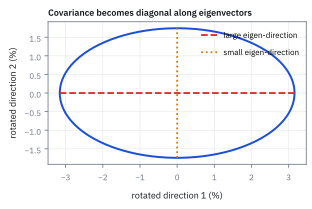
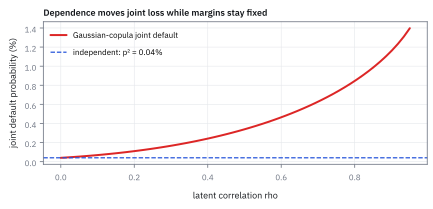

5.6 Conditional Independence and the Gaussian Copula
บริษัทที่กู้เงินหลายรายไม่เกี่ยวกันเลยเมื่อรู้แล้วว่าเศรษฐกิจดีหรือแย่ แต่ทุกรายเจอเศรษฐกิจเดียวกัน การผิดนัดชำระหนี้จึงมักเกิดพร้อมกันเป็นกลุ่ม Gaussian copula คือแบบจำลองที่เขียนความคิดนี้เป็นสูตร
บริษัทที่ต้องการเงินทุนมักออกหุ้นกู้ (bond) คือกู้เงินจากนักลงทุน แล้วสัญญาว่าจะจ่ายดอกเบี้ยและคืนเงินต้นตามกำหนด ถ้าบริษัทจ่ายไม่ได้ตามสัญญา เรียกว่าบริษัทผิดนัดชำระหนี้ (default) และคนที่ถือหุ้นกู้ก็เสียเงิน
โต๊ะเครดิตของธนาคาร (ทีมที่ลงทุนและซื้อขายหุ้นกู้) ถือหุ้นกู้ของสองบริษัท คือบริษัท A กับบริษัท B สองบริษัทนี้ไม่ได้ค้าขายกันเลย ถ้าผิดนัดทีละราย โต๊ะรับมือได้ แต่ถ้าผิดนัดพร้อมกันทั้งสองราย ความเสียหายจะมาเป็นก้อนใหญ่ในปีเดียว หัวหน้าโต๊ะจึงอยากรู้โอกาสของกรณีนั้น
ของที่รู้ (ตัวเลขสมมติจากทีมเศรษฐศาสตร์):
- ปีหน้าเศรษฐกิจออกได้สองแบบ คือดีด้วยโอกาส 0.7 (70%) หรือแย่ด้วยโอกาส 0.3 (30%)
- ถ้าเศรษฐกิจดี แต่ละบริษัทผิดนัดด้วยโอกาส 0.02 (2%)
- ถ้าเศรษฐกิจแย่ แต่ละบริษัทผิดนัดด้วยโอกาส 0.20 (20%)
- เมื่อรู้แล้วว่าเศรษฐกิจเป็นแบบไหน ชะตาของสองบริษัทไม่เกี่ยวกัน บริษัทหนึ่งล้ม ไม่ได้ทำให้อีกบริษัทล้มตาม
คำถามคือ โอกาสที่ทั้งสองบริษัทผิดนัดในปีหน้าเป็นเท่าไร
นักวิเคราะห์คนหนึ่งหาโอกาสผิดนัดของบริษัทเดียวก่อน โดยถ่วงสองแบบของเศรษฐกิจด้วยโอกาสของมัน เรียกค่านี้ว่า $p$ แล้วคิดว่าสองบริษัทไม่เกี่ยวกัน จึงยกกำลังสอง
คำตอบ 0.548% นี้ถูกไหม?
ลองตอบก่อนเปิดเฉลย
ไม่ถูก คำตอบนี้ต่ำไปกว่าครึ่ง วิธีที่ถูกคือแยกคิดทีละแบบของเศรษฐกิจ ในแต่ละแบบ สองบริษัทไม่เกี่ยวกันจริง จึงคูณโอกาสได้ จากนั้นค่อยถ่วงสองแบบด้วยโอกาสของมัน
โอกาสที่ทั้งคู่ผิดนัดจึงเป็น 1.228% สูงกว่าคำตอบของนักวิเคราะห์ $0.01228/0.005476\approx2.24$ เท่า
นักวิเคราะห์ทำผิดลำดับ เขาเฉลี่ยก่อนแล้วค่อยคูณ การเฉลี่ยก่อนทิ้งข้อเท็จจริงที่สำคัญที่สุดไป คือสองบริษัทเจอเศรษฐกิจเดียวกัน ปีไหนเศรษฐกิจแย่ ทั้งสองบริษัทก็อ่อนแอพร้อมกัน
ภาพรวมก่อนลงสูตร
สองเหตุการณ์เป็น independence (อิสระกัน) เมื่อรู้ผลของเหตุการณ์หนึ่งแล้ว โอกาสของอีกเหตุการณ์ไม่เปลี่ยนเลย การผิดนัดของสองบริษัทแทบไม่เคยอิสระกันแบบนี้ เพราะปีที่เศรษฐกิจแย่ ทุกบริษัทก็อ่อนแอพร้อมกัน
แต่ถ้าเรารู้แล้วว่าเศรษฐกิจเป็นแบบไหน สิ่งที่ยังสุ่มอยู่คือเรื่องเฉพาะของแต่ละบริษัท เช่นผู้บริหารตัดสินใจพลาด หรือโรงงานไฟไหม้ เรื่องพวกนี้ของบริษัทหนึ่งไม่เกี่ยวกับอีกบริษัท ความคิดนี้มีชื่อว่า conditional independence คืออิสระกันเมื่อรู้ปัจจัยร่วมแล้ว และมักใกล้ความจริงกว่ามาก
วิธีคำนวณจึงมีสองชั้น ชั้นแรกตรึงภาวะเศรษฐกิจไว้ แล้วคูณโอกาสของแต่ละบริษัทภายในภาวะนั้น ชั้นที่สองเฉลี่ยผลที่ได้ข้ามทุกภาวะ โดยถ่วงด้วยโอกาสที่แต่ละภาวะจะเกิด ท่าเฉลี่ยสองชั้นนี้คือ tower property (เฉลี่ยทีละภาวะ แล้วเฉลี่ยกลับทั้งระบบ)
รูปด้านล่างวาดสองชั้นนี้จากตัวอย่างในกล่องเปิดหน้า ส่วนบนเป็นต้นไม้ที่แตกเป็นเศรษฐกิจดีกับแย่ ข้างแต่ละกิ่งมีแท่งยาวเท่ากับโอกาสที่ทั้งสองบริษัทผิดนัดในภาวะนั้น ส่วนล่างเทียบคำตอบที่ถูก (เฉลี่ยข้ามภาวะ) กับคำตอบของนักวิเคราะห์ (ยกกำลังสองค่าเฉลี่ย) ให้สังเกตว่าภาวะแย่เกิดแค่ 30% ของเวลา แต่เป็นตัวกำหนดคำตอบเกือบทั้งหมด (ขั้นที่ 1 จะคำนวณให้ดูว่าราว 98%)
หน้านี้มีแผนดังนี้
- เขียนนิยามของ conditional independence ให้ชัด แล้วดูว่าทำไมข่าวว่าบริษัทหนึ่งผิดนัดจึงทำให้อีกบริษัทดูเสี่ยงขึ้น
- ขยายจากเศรษฐกิจสองแบบเป็นเศรษฐกิจที่เป็นตัวเลขต่อเนื่อง ด้วยแบบจำลองชื่อ Gaussian copula แบบจำลองนี้ตั้งโอกาสผิดนัดของแต่ละบริษัทให้ตรงกับตลาด แล้วใช้ตัวเลขเดียว $\rho$ (อ่านว่า “โร”) คุมว่าการผิดนัดเกิดพร้อมกันเป็นกลุ่มมากแค่ไหน
- ใช้แบบจำลองนี้นับจำนวนบริษัทที่ผิดนัดในพอร์ตหุ้นกู้ 125 ตัว และดูว่าความเสียหายตกกับนักลงทุนกลุ่มไหน เมื่อพอร์ตถูกหั่นเป็นชั้น (tranche)
- แยกตัวเลขสามตัวที่ชื่อคล้ายกันแต่วัดคนละเรื่อง คือ latent correlation, default correlation และ tail dependence
รูป — คูณภายในภาวะ แล้วเฉลี่ยข้ามภาวะ
ศัพท์ที่ใช้ในหัวข้อนี้
- หุ้นกู้ (bond)
- สัญญากู้เงินที่บริษัทออกขายให้นักลงทุน บริษัทสัญญาว่าจะจ่ายดอกเบี้ยเป็นงวด และคืนเงินต้นเมื่อครบกำหนด
- ผิดนัด (default)
- บริษัทจ่ายดอกเบี้ยหรือเงินต้นไม่ได้ตามสัญญา คนถือหุ้นกู้ได้เงินคืนไม่ครบ หรือไม่ได้คืนเลย
- PD (probability of default)
- โอกาสที่บริษัทหนึ่งผิดนัดภายในช่วงเวลาที่กำหนด เช่นหนึ่งปี ในตลาดจริงประมาณจากราคาหุ้นกู้ หรือจากราคา CDS ซึ่งเป็นสัญญาประกันการผิดนัด ยิ่งค่าประกันแพง ตลาดยิ่งเห็นว่าบริษัทนั้นเสี่ยง
- Conditional independence
- สองตัวแปรอิสระกันเมื่อรู้ค่าของตัวแปรที่สาม (ปัจจัยร่วม เช่นภาวะเศรษฐกิจ) แล้ว ก่อนรู้ปัจจัยนั้น สองตัวแปรอาจเกี่ยวกันมาก ประโยชน์ของมันคือ ภายในแต่ละภาวะ โอกาสร่วมของหลายบริษัทเป็นแค่ผลคูณ ซึ่งคำนวณง่าย
- Copula
- วิธีเขียนการแจกแจงร่วมโดยแยกสองเรื่องออกจากกัน เรื่องแรกคือการแจกแจงของแต่ละตัว เรื่องที่สองคือแต่ละตัวมักขยับไปด้วยกันแค่ไหน copula เก็บเฉพาะเรื่องที่สอง โดยดูจากตำแหน่งเปอร์เซ็นไทล์ของแต่ละตัว เราจึงตั้ง PD ของแต่ละบริษัทให้ตรงกับตลาดได้ แล้วปรับเฉพาะระดับการผิดนัดพร้อมกัน
- Latent variable (ตัวแปรแฝง)
- คะแนน “สุขภาพ” ของบริษัทที่แบบจำลองสร้างขึ้น ไม่มีใครเห็นคะแนนนี้โดยตรง บริษัทผิดนัดเมื่อคะแนนต่ำกว่าเกณฑ์ คะแนนนี้เป็นตัวเลขต่อเนื่อง จึงใช้ Gaussian copula กับมันได้ แม้การผิดนัดเองจะมีแค่สองค่า คือผิดนัด (1) หรือไม่ผิดนัด (0)
- Tranche
- ชั้นของการรับความเสียหายในพอร์ตหนี้ ชั้น equity รับความเสียหายก้อนแรก ชั้น mezzanine รับต่อ ชั้น senior รับเป็นลำดับสุดท้าย ชั้นที่เสี่ยงกว่าได้ผลตอบแทนสูงกว่า การหั่นแบบนี้ทำให้ขายความเสี่ยงก้อนเดียวให้นักลงทุนหลายกลุ่มที่ชอบความเสี่ยงต่างกันได้
- Recovery
- สัดส่วนของเงินที่คนถือหุ้นกู้ได้คืนหลังบริษัทผิดนัด หน้านี้สมมติว่าเป็นศูนย์ คือผิดนัดแล้วเสียทั้งหมด
- Tail dependence
- ตอบคำถามว่า ในวิกฤตที่ลึกสุด ๆ ถ้าตัวแรกพังแล้ว ตัวที่สองพังตามด้วยโอกาสเท่าไร วัดเป็นลิมิตเมื่อหางลึกขึ้นไม่สิ้นสุด ใช้แยกแบบจำลองที่ยังพังพร้อมกันในวิกฤตลึกสุด ออกจากแบบจำลองที่ความเกี่ยวกันจางหายไปเมื่อวิกฤตลึกขึ้น
สัญลักษณ์และหน่วย
| สัญลักษณ์ | ความหมาย | หน่วย |
|---|---|---|
| $Z$ | ปัจจัยร่วม คือภาวะเศรษฐกิจที่ทุกบริษัทเจอ ค่าต่ำแปลว่าแย่ | ไม่มีหน่วย |
| $D_i$ | เป็น 1 ถ้าบริษัท $i$ ผิดนัดภายในหนึ่งปี เป็น 0 ถ้าไม่ผิดนัด | ไม่มีหน่วย |
| $p$ | PD ของหนึ่งบริษัท เฉลี่ยข้ามทุกภาวะ | ไม่มีหน่วย (ต่อปี) |
| $p(z)$ | PD ของหนึ่งบริษัท เมื่อรู้แล้วว่าภาวะเศรษฐกิจ $Z=z$ | ไม่มีหน่วย (ต่อปี) |
| $G_i$ | คะแนนสุขภาพแฝงของบริษัท $i$ | ไม่มีหน่วย |
| $\varepsilon_i$ | ส่วนของคะแนนที่เป็นเรื่องเฉพาะบริษัท $i$ | ไม่มีหน่วย |
| $\rho$ | latent correlation คือ correlation ระหว่างคะแนนสุขภาพของสองบริษัท | ไม่มีหน่วย |
| $c$ | เกณฑ์ผิดนัด บริษัทผิดนัดเมื่อ $G_i\le c$ ตั้งไว้ที่ $c=\Phi^{-1}(p)$ | ไม่มีหน่วย |
| $\Phi$ | CDF ของ normal มาตรฐาน คือ $\Phi(x)=$ โอกาสที่ค่าไม่เกิน $x$ | — |
| $\Phi^{-1}$ | ฟังก์ชันกลับของ $\Phi$ ใส่โอกาสเข้าไป ได้ค่าบนแกนนอนออกมา | — |
| $\varphi$ | density ของ normal มาตรฐาน คือความสูงของรูประฆัง | — |
| $N$ | จำนวนบริษัทที่ผิดนัดในพอร์ตภายในหนึ่งปี | จำนวนตัว |
ขั้นที่ 1 — คูณภายในภาวะ แล้วเฉลี่ยข้ามภาวะ
ขั้นนี้ทำโจทย์ในกล่องเปิดหน้าให้เป็นระบบ โดยเขียนด้วยสัญลักษณ์ เพราะขั้นต่อ ๆ ไปจะใช้สัญลักษณ์ชุดเดียวกันกับพอร์ตที่ใหญ่ขึ้น
โจทย์ให้อะไรมาบ้าง: ใช้ตัวเลขชุดเดิมจากกล่องเปิดหน้า
- $Z$ คือภาวะเศรษฐกิจปีหน้า เป็น “ดี” (good) ด้วยโอกาส 0.7 และ “แย่” (bad) ด้วยโอกาส 0.3
- $p(Z)$ คือ PD ของบริษัทหนึ่งในภาวะนั้น ภาวะดี $p(\text{good})=0.02$ ภาวะแย่ $p(\text{bad})=0.20$
- $D_A$ เป็น 1 ถ้าบริษัท A ผิดนัด เป็น 0 ถ้าไม่ผิดนัด $D_B$ ก็เช่นเดียวกันสำหรับบริษัท B
- เมื่อรู้ $Z$ แล้ว $D_A$ กับ $D_B$ อิสระกัน
เราต้องการสามตัวเลข คือ PD ของบริษัทเดียว โอกาสที่ทั้งคู่ผิดนัด และคำตอบผิดแบบนักวิเคราะห์ ไว้เทียบกัน PD ของบริษัทเดียวได้จากการถ่วงสองภาวะด้วยโอกาสของมัน โอกาสที่ทั้งคู่ผิดนัดต้องคูณภายในภาวะก่อน ภาวะดีได้ $0.02^2$ ภาวะแย่ได้ $0.20^2$ แล้วจึงถ่วง
คำตอบ: โอกาสที่ทั้งคู่ผิดนัดคือ 1.228% ส่วนผลคูณของ PD เฉลี่ยได้แค่ 0.548% สองค่านี้ต่างกัน 0.006804 หรือราว 0.68 จุด ลองดูว่าคำตอบ 0.01228 มาจากไหน ภาวะแย่ให้ 0.012 ภาวะดีให้แค่ 0.00028 สัดส่วนของภาวะแย่จึงเป็น $0.012/0.01228\approx0.98$ หรือ 98% ของคำตอบ ภาวะที่เกิดแค่ 30% ของเวลาจึงเป็นตัวกำหนดว่าสองบริษัทล้มพร้อมกันบ่อยแค่ไหน
ตรวจเองใน 10 วินาที: ผลต่าง 0.006804 ไม่ใช่ตัวเลขบังเอิญ มันคือ variance ของ $p(Z)$ คือความแกว่งของ PD ข้ามภาวะ เพราะ $P(D_A=1,D_B=1)=E[p(Z)^2]$ และ $P(D_A=1)P(D_B=1)=(E[p(Z)])^2$ ผลต่างของสองค่านี้คือสูตร variance พอดี ลองคำนวณ variance ตรง ๆ ดู $p(Z)$ ห่างจากค่าเฉลี่ย 0.074 เท่าไรในแต่ละภาวะ แล้วยกกำลังสองและถ่วงด้วยโอกาส
ได้ตรงกับผลต่างข้างบน และเพราะ variance ไม่มีวันติดลบ ในแบบจำลองแบบนี้ (สองบริษัทมี PD เท่ากันในทุกภาวะ) โอกาสที่ทั้งคู่ผิดนัดจึงไม่มีวันต่ำกว่าผลคูณ ถ้า PD ไม่ขึ้นกับภาวะเลย variance นี้เป็นศูนย์ และสองบริษัทก็อิสระกันจริง
ขั้นที่ 2 — นิยาม conditional independence
ตัวอย่างในขั้นที่แล้วพึ่งสมมติฐานหนึ่งโดยไม่ได้ตั้งชื่อ คือ “เมื่อรู้ภาวะแล้ว สองบริษัทไม่เกี่ยวกัน” ขั้นนี้เขียนสมมติฐานนั้นเป็นสูตร เพื่อให้รู้ว่ามันอนุญาตให้ทำอะไรได้บ้าง และขยายจากสองบริษัทเป็นพอร์ตทั้งก้อน ในสูตร $X$ กับ $Y$ คือตัวแปรสุ่มสองตัวใด ๆ $f$ กับ $g$ คือฟังก์ชันใด ๆ ของมัน และเครื่องหมาย $\mid Z$ แปลว่า “เมื่อรู้ค่าของ $Z$ แล้ว”
ความคิดของสูตรชุดนี้คือ กฎ “ค่าเฉลี่ยของผลคูณเท่ากับผลคูณของค่าเฉลี่ย” จาก ผลที่ตามมาของความเป็นอิสระ ใช้ได้ภายในภาวะเดียว แต่ใช้ข้ามภาวะไม่ได้ นิยามของ conditional independence คือเรียกร้องให้กฎนี้จริงเมื่อตรึง $Z$ ไว้ค่าหนึ่ง กับทุกฟังก์ชัน $f,g$ ถ้าเลือก $f$ กับ $g$ เป็นตัวบอกการผิดนัด (เป็น 1 เมื่อผิดนัด เป็น 0 เมื่อไม่ผิดนัด) ค่าเฉลี่ยของมันก็คือโอกาสผิดนัด เราจึงได้กฎผลคูณของโอกาส ซึ่งใช้ได้กี่บริษัทก็ได้ (เครื่องหมาย $\prod$ คือคูณทุกตัวตั้งแต่ $i=1$ ถึง $n$) นี่คือเหตุผลที่โต๊ะเครดิตชอบสมมติฐานนี้ ภายในภาวะหนึ่ง โอกาสที่หุ้นกู้ร้อยตัวผิดนัดพร้อมกันเป็นแค่ผลคูณร้อยตัว ซึ่งคำนวณง่าย
จุดที่คนสะดุดคือตอนเฉลี่ยข้ามภาวะ ให้ $p_A(Z)$ กับ $p_B(Z)$ คือ PD ของบริษัท A กับ B ในภาวะ $Z$ ภายในภาวะเรารู้ว่าโอกาสร่วมคือ $p_A(Z)\,p_B(Z)$ แล้วใช้ tower property เฉลี่ยผลคูณนี้ข้ามทุกค่าของ $Z$ แบบเดียวกับที่ขั้นที่แล้วทำด้วยมือ ผลที่ได้โดยทั่วไปไม่เท่ากับผลคูณของค่าเฉลี่ย เพราะ $p_A(Z)$ กับ $p_B(Z)$ ขยับขึ้นลงไปพร้อมกันตาม $Z$ ผลต่างของสองฝั่งมีชื่อว่า covariance ของ $p_A(Z)$ กับ $p_B(Z)$
ตัวเลขชุดนี้มาจากขั้นที่แล้ว ถ้าสองบริษัทแย่ลงในภาวะเดียวกัน covariance เป็นบวก และโอกาสที่ทั้งคู่ผิดนัดก็สูงกว่าผลคูณ ถ้าบริษัทหนึ่งได้ประโยชน์จากภาวะที่ทำร้ายอีกบริษัท covariance อาจติดลบได้ เช่นบริษัทขุดน้ำมันกับสายการบิน น้ำมันแพงทำให้บริษัทแรกรวย แต่สายการบินมีต้นทุนสูงขึ้น
ข้อควรระวังคือ การมีปัจจัยร่วมในแบบจำลองไม่ได้ทำให้ conditional independence จริงขึ้นมาเอง มันยังเป็นสมมติฐาน เช่นถ้าบริษัท A เป็นลูกค้ารายใหญ่ของบริษัท B พอ A ผิดนัด B ก็ขาดรายได้ทันที แม้เรารู้ภาวะเศรษฐกิจอยู่แล้วก็ตาม กรณีแบบนี้สมมติฐานผิด
ขั้นที่ 3 — การผิดนัดของรายหนึ่งคือข่าวเรื่องเศรษฐกิจ
ในตลาดจริง พอมีข่าวว่าบริษัทหนึ่งผิดนัด ราคาหุ้นกู้ของบริษัทอื่นที่ไม่เกี่ยวข้องกันมักตกตาม ราคาตกแปลว่าตลาดเห็นว่าบริษัทเหล่านั้นเสี่ยงขึ้น แต่ขั้นที่แล้วบอกว่าเมื่อรู้ภาวะ สองบริษัทไม่เกี่ยวกัน แล้วข่าวของ A เปลี่ยนความเสี่ยงของ B ได้อย่างไร ขั้นนี้ตอบด้วย Bayes' theorem คือกฎปรับโอกาสเมื่อได้หลักฐานใหม่
โจทย์ให้อะไรมาบ้าง: ใช้แบบจำลองสองภาวะเดิม วันนี้เพิ่งรู้ว่าบริษัท A ผิดนัด แต่ยังไม่มีใครรู้ว่าปีนี้เศรษฐกิจอยู่ในภาวะไหน เราอยากรู้สองอย่าง คือโอกาสที่เศรษฐกิจแย่ และ PD ของบริษัท B หลังได้ข่าวนี้
ข้อแรกใช้ Bayes ตัวเศษคือโอกาสที่เศรษฐกิจแย่และ A ผิดนัด คือ $0.3\times0.20=0.06$ ตัวหารคือโอกาสที่ A ผิดนัดรวมทุกภาวะ คือ 0.074 จากขั้นที่ 1 ข้อที่สองใช้นิยามของโอกาสตามเงื่อนไขจาก conditional distribution คือโอกาสที่ทั้งคู่ผิดนัด หารด้วยโอกาสที่ A ผิดนัด
คำตอบ: หลังรู้ว่า A ผิดนัด โอกาสที่เศรษฐกิจแย่กระโดดจาก 30% เป็น 81% และ PD ของ B กระโดดจาก 7.4% เป็น 16.6% เหตุผลอยู่ในตัวเลขของ Bayes ในโอกาส 7.4% ที่ A ผิดนัด มีถึง 6 จุดที่มาจากภาวะแย่ การที่ A ผิดนัดจึงเป็นหลักฐานชั้นดีว่าเศรษฐกิจแย่ A ไม่ได้ทำให้ B ผิดนัด แต่ข่าวของ A บอกเราว่าภาวะที่ทั้งสองบริษัทเจออยู่น่าจะแย่
ตรวจเองใน 10 วินาที: PD ใหม่ของ B ต้องเท่ากับ PD ในแต่ละภาวะ ถ่วงด้วยโอกาสใหม่ของภาวะนั้น โอกาสของภาวะดีตอนนี้คือ $1-0.811=0.189$
ได้ 16.6% ตรงกัน ข้อนี้ยังยืนยันนิยามด้วย ถ้ารู้ภาวะอยู่แล้ว ข่าวของ A ไม่เปลี่ยนอะไร ในภาวะแย่ PD ของ B ยังเป็น 20% ไม่ว่า A จะผิดนัดหรือไม่ ข่าวของ A มีผลเพียงเพราะเราไม่รู้ภาวะ
ขั้นที่ 4 — Copula: แยกการแจกแจงรายตัวออกจากรูปแบบการเกิดร่วม
เศรษฐกิจสองแบบหยาบเกินไปสำหรับพอร์ตจริง ภาวะจริงมีได้ตั้งแต่ดีมากจนถึงวิกฤต นอกจากนั้นโต๊ะเครดิตยังมีโจทย์สองข้อที่ต้องทำพร้อมกัน ข้อแรก PD ของแต่ละบริษัทต้องตรงกับที่ตลาดบอก (จากราคาหุ้นกู้หรือ CDS) ข้อที่สอง ต้องปรับระดับการผิดนัดพร้อมกันได้อิสระ โดยไม่ทำให้ PD รายตัวเพี้ยน copula คือเครื่องมือที่แยกสองข้อนี้ออกจากกัน
ก่อนดูสูตร ขอทวนสัญลักษณ์ $F_X(x)=P(X\le x)$ คือ CDF ของ $X$ (ดูหน้า CDF) มันบอกว่าค่า $x$ อยู่ที่ตำแหน่งเปอร์เซ็นไทล์เท่าไรของ $X$ ส่วน $F_{X,Y}(x,y)=P(X\le x,\,Y\le y)$ คือ joint CDF ของสองตัว
ความคิดหลักคือ แปลงทุกตัวแปรให้เป็น “ตำแหน่งเปอร์เซ็นไทล์” ก่อน เช่น $U=0.10$ แปลว่า $X$ มีโอกาสแค่ 10% ที่จะออกมาต่ำกว่าค่านี้ ค่านี้จึงอยู่ในกลุ่ม 10% ล่างสุดของตัวมันเอง ตำแหน่งแบบนี้ไม่มีหน่วย และเป็น uniform บนช่วง 0 ถึง 1 เสมอ (เมื่อ $F_X$ ต่อเนื่อง) ไม่ว่า $X$ จะมาจากการแจกแจงอะไร ตัวแปรทุกตัวจึงถูกพามาอยู่บนไม้บรรทัดเดียวกัน
ตัวอย่าง ให้ $X$ เป็นผลตอบแทนที่ uniform ระหว่าง −10% กับ 10% แล้ว $X$ ออกมา −8% ตำแหน่งเปอร์เซ็นไทล์ของมันคือระยะจากขอบล่าง หารด้วยความกว้างทั้งช่วง จากนั้นแปลงตำแหน่งเดียวกันเป็นคะแนน normal ด้วย $\Phi^{-1}$ (ค่าจากตาราง Normal)
ทำไมเปอร์เซ็นไทล์จึงพอ ทฤษฎีบทของ Sklar (สูตรตรงกลาง) บอกว่า joint CDF ใด ๆ เขียนเป็นฟังก์ชัน $C$ ของ CDF รายตัว (marginal CDF) ได้เสมอ ฟังก์ชัน $C$ นี้คือ copula มันคือ joint CDF ของคู่เปอร์เซ็นไทล์ $(U,V)$ จึงเก็บเรื่อง “ขยับไปด้วยกันแค่ไหน” ไว้ทั้งหมด และไม่สนว่าแต่ละตัวมีการแจกแจงแบบไหน ถ้า marginal ต่อเนื่อง $C$ มีได้แบบเดียว เราจึงเลือก marginal กับ copula แยกกันได้
แต่ copula มีได้หลายแบบ และเราต้องเลือกเอง แบบที่หน้านี้ใช้คือ Gaussian copula (สูตรล่าง) วิธีของมันคือแปลงเปอร์เซ็นไทล์ทั้งสองเป็นคะแนน normal แล้วสมมติว่าคู่คะแนนนี้เป็น normal ร่วมสองตัวที่มี correlation $\rho$ ($\Phi_\rho$ คือ joint CDF ของ normal มาตรฐานสองตัวแบบนั้น เรียกว่า bivariate normal CDF) จุดที่ต้องระวังคือ การแปลงแต่ละตัวให้เป็น normal ไม่ได้ทำให้คู่ของมันเป็น normal ร่วมโดยอัตโนมัติ นั่นเป็นสมมติฐานที่เราเติมเข้าไปเอง และเป็นจุดอ่อนหลักของแบบจำลองนี้
ความเข้าใจผิดที่พบบ่อยคือคิดว่า รู้การแจกแจงรายตัวกับ correlation แล้วก็รู้การแจกแจงร่วม ซึ่งไม่จริง correlation วัดแค่ว่าสองตัวเรียงเป็นเส้นตรงแค่ไหน สองแบบจำลองที่แต่ละตัวเป็น normal มาตรฐานเหมือนกัน และมี correlation 0.7 เท่ากัน อาจให้โอกาสที่ทั้งคู่ดิ่งแรงพร้อมกันต่างกันมาก ขึ้นกับ copula ที่เลือก ขั้นที่ 10 จะแสดงตัวเลขให้เห็น
รูป — สะพานเปอร์เซ็นไทล์: จากผลตอบแทนไปเป็นคะแนน normal
รูป — คะแนนแฝงแบบ Gaussian ที่ correlation ต่างกัน

ขั้นที่ 5 — ปัจจัยร่วมหนึ่งตัว: สร้าง Gaussian copula ให้คำนวณได้
Gaussian copula เต็มรูปแบบต้องการ correlation ของทุกคู่บริษัท พอร์ต 125 ตัวมี $125\times124/2=7{,}750$ คู่ ประมาณตัวเลขเยอะขนาดนั้นให้น่าเชื่อถือไม่ได้ แบบจำลองที่ใช้กันจริงจึงลดเหลือตัวเลขเดียว โดยให้ทุกบริษัทผูกกับปัจจัยร่วมตัวเดียว ผลคือเรากลับมาได้โครงแบบเดียวกับตัวอย่างสองภาวะ แค่ภาวะเศรษฐกิจกลายเป็นตัวเลขต่อเนื่อง
ตัวละครในสูตรมีดังนี้ $Z$ คือสุขภาพของเศรษฐกิจที่ทุกบริษัทเจอร่วมกัน $\varepsilon_i$ คือเรื่องเฉพาะของบริษัท $i$ ทั้ง $Z,\varepsilon_1,\varepsilon_2,\ldots$ เป็น normal มาตรฐาน (ค่าเฉลี่ย 0 variance 1) และอิสระกันหมด $G_i$ คือคะแนนสุขภาพของบริษัท $i$ ที่ผสมสองส่วนนี้ บริษัทผิดนัดเมื่อคะแนนต่ำกว่าเกณฑ์ $c$
ทำไมน้ำหนักเป็น $\sqrt\rho$ กับ $\sqrt{1-\rho}$ เพราะเราอยากให้คะแนน $G_i$ เป็น normal มาตรฐานพอดี และให้ correlation ของทุกคู่เป็น $\rho$ ลองคำนวณดูด้วยกฎสองข้อ ข้อแรก variance ของผลบวกของตัวที่อิสระกันคือผลบวกของ variance และตัวคูณหน้าแต่ละตัวออกมาเป็นกำลังสอง เช่น $(\sqrt\rho)^2=\rho$ ข้อสอง covariance ของสองบริษัทมาจาก $Z$ ตัวเดียวที่ทั้งคู่ใช้ร่วมกัน เพราะ $\varepsilon_i$ กับ $\varepsilon_j$ ไม่เกี่ยวกับอะไรเลย
เมื่อ variance ของทุกคะแนนเป็น 1 covariance ก็เท่ากับ correlation คือ $\rho$ ทุกคู่ แบบจำลองนี้จึงเป็น Gaussian copula ที่ทุกคู่มี correlation เท่ากัน ถ้าอยากให้แต่ละบริษัทผูกกับเศรษฐกิจไม่เท่ากัน ก็ให้บริษัท $i$ มีน้ำหนักของตัวเอง $a_i$ คือ $G_i=a_iZ+\sqrt{1-a_i^2}\,\varepsilon_i$ แล้ว correlation ของคู่ $i,j$ จะเป็น $a_ia_j$
ทำไมเกณฑ์เป็น $c=\Phi^{-1}(p)$ เพราะ $G_i$ เป็น normal มาตรฐาน โอกาสที่ $G_i\le c$ จึงเท่ากับ $\Phi(c)=\Phi(\Phi^{-1}(p))=p$ พอดี PD ของแต่ละบริษัทจึงตรงกับตลาดเสมอ ไม่ว่า $\rho$ เป็นเท่าไร นี่คือการแยก marginal ออกจาก copula ที่ขั้นที่แล้วสัญญาไว้ ในงานจริง ตลาดบอก PD ได้หลายช่วงเวลา ให้ $q_i(t)$ คือโอกาสที่บริษัท $i$ ผิดนัดภายใน $t$ ปี ซึ่งอ่านได้จากราคา CDS ถ้าตั้งเกณฑ์เป็น $\Phi^{-1}(q_i(t))$ ทุกบริษัทก็จะได้เวลาผิดนัดที่ตรงกับตลาด และ copula ตัวเดิมผูกเวลาผิดนัดของทุกบริษัทเข้าด้วยกัน
หัวใจของแบบจำลองคือสูตร $p(z)$ เมื่อรู้ $Z=z$ แล้ว ส่วนที่ยังสุ่มเหลือแค่ $\varepsilon_i$ ซึ่งอิสระกันข้ามบริษัท การผิดนัดจึงอิสระกันเมื่อรู้ $Z$ ตรงกับนิยามในขั้นที่ 2 พอดี ส่วนสูตรของ $p(z)$ ได้จากการย้ายข้างเงื่อนไขผิดนัด $G_i\le c$ ให้เหลือ $\varepsilon_i$ อยู่ตัวเดียว
$\varepsilon_i$ เป็น normal มาตรฐาน โอกาสที่มันไม่เกินค่าทางขวาจึงเป็น $\Phi$ ของค่านั้น ตรวจทิศทางได้ง่าย ถ้า $z$ ต่ำลง (เศรษฐกิจแย่ลง) ตัวเศษ $c-\sqrt\rho\,z$ ใหญ่ขึ้น PD จึงสูงขึ้น ถูกต้องตามสามัญสำนึก ถ้า $\rho=0$ สูตรเหลือ $\Phi(c)=p$ ทุกภาวะ คือเศรษฐกิจไม่มีผลเลย ส่วน $\rho=1$ ทำให้ตัวหาร $\sqrt{1-\rho}$ เป็นศูนย์ ต้องคิดแยก (ดูหัวข้อความผิดท้ายหน้า)
ขั้นที่ 6 — PD ในแต่ละภาวะ เมื่อ PD เฉลี่ยคงที่ 2%
สูตร $p(z)$ ในขั้นที่แล้วยังเป็นตัวอักษร ขั้นนี้ใส่ตัวเลขจริง เพื่อดูว่า $\rho$ ทำอะไรกับ PD ในภาวะต่าง ๆ
โจทย์ให้อะไรมาบ้าง:
- PD เฉลี่ยของหนึ่งบริษัท $p=0.02$ (2% ต่อปี ตัวเลขสมมติ)
- เกณฑ์ผิดนัด $c=\Phi^{-1}(0.02)=-2.054$ อ่านจากตาราง Normal คือจุดที่พื้นที่ใต้รูประฆังทางซ้ายเท่ากับ 0.02
- เทียบ $\rho=0.15$ กับ $\rho=0.30$ และใช้ $\rho=0$ (ไม่มีปัจจัยร่วม) เป็นเส้นฐาน
- ภาวะที่ดู คือ $z=0$ (เศรษฐกิจกลาง ๆ) $z=-2$ (แย่) และ $z=-3$ (วิกฤต) ตัวเลข $z$ บอกว่าเศรษฐกิจต่ำกว่าค่าเฉลี่ยกี่ SD (standard deviation ซึ่งของ $Z$ เท่ากับ 1)
แต่ละช่องในตารางได้จากการแทนค่าในสูตร $p(z)$ ของขั้นที่แล้ว ใต้ตารางแสดงการแทนค่าครบหนึ่งช่องให้ดู
| ภาวะ $z$ | $\rho=0$ | $\rho=0.15$ | $\rho=0.30$ |
|---|---|---|---|
| 0 (ภาวะกลาง) | 2% | 1.30% | 0.71% |
| −2 (แย่) | 2% | 8.27% | 12.60% |
| −3 (วิกฤต) | 2% | 16.67% | 31.18% |
ตัวอย่างช่อง $\rho=0.3$ กับ $z=-3$ ตัวเศษคือ $c-\sqrt\rho\,z$ ซึ่ง $z$ ติดลบ จึงกลายเป็นบวก $\sqrt{0.3}\times3$
สุดท้าย ตรวจว่าเฉลี่ยข้ามทุกภาวะแล้วยังได้ 2% เท่าเดิม การเฉลี่ยข้ามภาวะที่เป็นตัวเลขต่อเนื่องคืออินทิกรัล โดยถ่วงแต่ละภาวะด้วย $\varphi(z)$ ซึ่งบอกว่าภาวะ $z$ เกิดบ่อยแค่ไหน (แทนน้ำหนัก 0.7 กับ 0.3 ในตัวอย่างสองภาวะ)
ผลนี้ไม่ต้องคำนวณก็รู้ เพราะการเฉลี่ย $p(z)$ ข้ามทุกภาวะก็คือโอกาสผิดนัดรวม $P(G_i\le c)$ ตาม tower property และขั้นที่แล้วตั้งเกณฑ์ให้ค่านี้เท่ากับ $p$ พอดี โค้ดท้ายหน้าอินทิเกรตเชิงตัวเลขแล้วได้ 0.0200 ทั้งที่ $\rho=0.15$ และ $0.30$
คำตอบ: ยิ่ง $\rho$ สูง PD ยิ่งเหวี่ยงตามภาวะ ในภาวะปกติ PD ต่ำลง ในวิกฤต PD สูงขึ้นมาก ที่ $\rho=0.30$ PD ไล่จาก 0.71% ที่ $z=0$ ไปถึง 31.18% ที่ $z=-3$ แต่ค่าเฉลี่ยข้ามทุกภาวะยังเป็น 2% เท่าเดิม
ข้อที่หลายคนแปลกใจคือ ที่ภาวะกลาง $z=0$ PD ไม่ใช่ 2% เหตุผลคือ 2% เป็นค่าเฉลี่ยของ PD ข้ามทุกภาวะ ไม่ใช่ PD ในภาวะที่อยู่ตรงกลาง กราฟของ $p(z)$ โค้งขึ้นแรงทางซ้าย ภาวะเลวร้ายที่เกิดไม่บ่อยมี PD สูงมาก จึงดึงค่าเฉลี่ยขึ้นไปเหนือค่าที่ภาวะกลาง
ตรวจเองใน 10 วินาที: ที่ $\rho=0.3$ และ $z=-3$ ตารางเขียน 31.18% ส่วนการแทนค่าด้านบนได้ 0.312 ตรงกัน ลองดูกรณีสุดขั้วด้วย ที่ $\rho=0$ ทุกช่องต้องเป็น 2% เพราะสูตรเหลือ $\Phi(c)=p$ และตารางก็เป็นอย่างนั้น
รูป — PD ตามภาวะเศรษฐกิจ: correlation สูงทำให้โค้งชันขึ้น
ขั้นที่ 7 — นับจำนวนผิดนัดในพอร์ตหุ้นกู้ 125 ตัว
โต๊ะเครดิตไม่ได้ถือหุ้นกู้แค่สองตัว แต่ถือเป็นพอร์ต คำถามที่โต๊ะสนใจจึงเป็นว่า ในหนึ่งปีจะมีกี่ตัวที่ผิดนัด และโอกาสที่ผิดนัดพร้อมกันหลายตัวเป็นเท่าไร
โจทย์ให้อะไรมาบ้าง:
- พอร์ตสมมติมีหุ้นกู้ 125 ตัว จาก 125 บริษัท (ขนาดเดียวกับดัชนี CDS ที่ตลาดใช้กันจริง)
- ทุกตัวมี PD หนึ่งปีเท่ากัน $p=0.02$
- ใช้แบบจำลองปัจจัยเดียวจากขั้นที่ 5 โดยเทียบ $\rho=0$, 0.15 และ 0.30
- ให้ $N$ คือจำนวนบริษัทที่ผิดนัดในหนึ่งปี
วิธีคิดเหมือนตัวอย่างสองภาวะทุกอย่าง ชั้นแรกตรึงภาวะ $Z=z$ ไว้ ภายในภาวะนั้น 125 บริษัทอิสระกันและมี PD เท่ากันคือ $p(z)$ จำนวนที่ผิดนัดจึงเป็น binomial คือการนับว่าการทดลองที่อิสระกัน 125 ครั้งออกผล “ใช่” กี่ครั้ง (ในที่นี้ “ใช่” คือผิดนัด) ชั้นที่สองเฉลี่ยข้ามทุกภาวะด้วยน้ำหนัก $\varphi(z)$ ($\binom{125}{k}$ คือจำนวนวิธีเลือก $k$ บริษัทจาก 125)
ค่าเฉลี่ย $E[N]$ หาได้ด้วยมือ เพราะภายในภาวะ binomial มีค่าเฉลี่ย $125\,p(z)$ และขั้นที่ 6 แสดงแล้วว่าเฉลี่ย $p(z)$ ข้ามภาวะได้ 0.02 ส่วน $P(N=k)$ ไม่มีสูตรปิด ตารางด้านล่างได้จากการอินทิเกรตเชิงตัวเลขด้วยโค้ดท้ายหน้า ยกเว้นคอลัมน์ $\rho=0$ ซึ่งเป็น binomial ตรง ๆ
คำตอบ:
| $\rho=0$ | $\rho=0.15$ | $\rho=0.30$ | |
|---|---|---|---|
| $E[N]$ จำนวนผิดนัดเฉลี่ย | 2.5 | 2.5 | 2.5 |
| $P(N=0)$ ไม่มีใครผิดนัด | 8.0% | 27.8% | 43.9% |
| $P(N\ge10)$ ผิดนัด 10 ตัวขึ้นไป | 0.022% | 3.85% | 6.43% |
ค่าเฉลี่ย 2.5 ตัวเท่ากันทุกคอลัมน์ เพราะค่าเฉลี่ยของผลบวกคือผลบวกของค่าเฉลี่ยเสมอ (linearity จาก ผลที่ตามมาของความเป็นอิสระ) กฎนี้ไม่สนว่าบริษัทเกี่ยวกันอย่างไร แต่รูปร่างของการแจกแจงต่างกันสุดขั้ว correlation ทำให้ปีส่วนใหญ่เงียบกว่าเดิม ที่ $\rho=0.30$ เกือบครึ่งหนึ่งของปี (43.9%) ไม่มีใครผิดนัดเลย สิ่งที่ต้องแลกคือปีที่ผิดนัดกันเป็นกลุ่ม โอกาสที่ผิดนัด 10 ตัวขึ้นไปเพิ่มจาก 0.022% เป็น 6.43% คือ $6.43\%/0.022\%\approx292$ หรือเกือบ 300 เท่า
ตรวจเองใน 10 วินาที: ที่ $\rho=0$ ทุกบริษัทอิสระกันจริง โอกาสที่ไม่มีใครผิดนัดเลยคือโอกาสที่แต่ละตัวรอด 0.98 คูณกัน 125 ครั้ง
ได้ 8.0% ตรงกับตาราง
รูป — การแจกแจงของจำนวนผิดนัด: ค่าเฉลี่ยเท่ากัน รูปร่างต่างกัน
ขั้นที่ 8 — ใครรับความเสียหาย: tranche ของพอร์ต
นักลงทุนแต่ละกลุ่มรับความเสี่ยงได้ไม่เท่ากัน บางกลุ่มอยากได้ดอกเบี้ยสูงและยอมเสียก่อน บางกลุ่มยอมรับดอกเบี้ยต่ำเพื่อให้ปลอดภัย โต๊ะเครดิตจึงไม่ขายความเสี่ยงของทั้งพอร์ตเป็นก้อนเดียว แต่หั่นเป็นชั้น (tranche) เรียงลำดับการรับความเสียหาย ชั้น equity รับความเสียหายก้อนแรก พอชั้น equity เสียจนหมดแล้ว ชั้น mezzanine จึงเริ่มรับต่อ ชั้น senior รับส่วนที่เหลือเป็นลำดับสุดท้าย ขั้นนี้ดูว่า $\rho$ ย้ายความเสียหายจากชั้นหนึ่งไปอีกชั้นอย่างไร
โจทย์ให้อะไรมาบ้าง:
- พอร์ต 125 ตัวเดิม PD 2% เท่ากันทุกตัว และใช้ตาราง $P(N=k)$ จากขั้นที่ 7
- หุ้นกู้แต่ละตัวมีมูลค่า 1 หน่วย พอร์ตทั้งก้อนจึงเป็น 125 หน่วย
- recovery เป็นศูนย์ (สมมติ) คือตัวไหนผิดนัดก็เสียทั้งหน่วย ผิดนัด $k$ ตัวจึงเสีย $k$ หน่วย
- ชั้น equity รับความเสียหายหน่วยที่ 0 ถึง 3 ชั้น mezzanine รับหน่วยที่ 3 ถึง 6 ชั้น senior รับหน่วยที่ 6 ถึง 125
เขียนชั้นหนึ่งว่า $[L,U]$ โดย $L$ คือจุดที่ชั้นเริ่มเสีย และ $U$ คือจุดที่ชั้นเสียหมด ให้ $\text{TL}_{L,U}(k)$ (tranche loss) คือความเสียหายของชั้นนั้นเมื่อผิดนัด $k$ ตัว ความเสียหายรวมที่ชั้นนี้เห็นคือ $k$ แต่ไม่เกิน $U$ เราจึงเขียน $\min(k,U)$ แล้วลบส่วนที่ชั้นล่างรับไปแล้ว $L$ ถ้าผลออกมาติดลบ แปลว่าความเสียหายยังมาไม่ถึงชั้นนี้ จึงใช้ $\max(\cdot,0)$ ปัดเป็นศูนย์ ความเสียหายคาดหมาย (ค่าเฉลี่ยของความเสียหาย) ได้จากการถ่วงทุกค่า $k$ ด้วยโอกาสของมัน
สองแถวล่างบอกว่า ถ้าบวกความเสียหายของทุกชั้น จะได้ความเสียหายของทั้งพอร์ตพอดี เพราะสามชั้นต่อกันโดยไม่ซ้อนและไม่เว้นช่อง ลองดูตัวอย่างเมื่อผิดนัด 5 ตัว
ชั้น equity เสียเต็มชั้น ชั้น mezzanine เสีย 2 จาก 3 หน่วย ชั้น senior ยังไม่เสียเลย รวมได้ 5 หน่วยพอดี ค่าเฉลี่ยของผลบวกคือผลบวกของค่าเฉลี่ย ความเสียหายคาดหมายของสามชั้นจึงรวมกันได้ $E[N]=2.5$ เสมอ ไม่ว่า $\rho$ เป็นเท่าไร ตารางด้านล่างได้จากโค้ดท้ายหน้า ซึ่งเพิ่ม $\rho=0.50$ เข้ามาด้วย
| ความเสียหายคาดหมาย (หน่วย) | $\rho=0$ | $\rho=0.15$ | $\rho=0.30$ | $\rho=0.50$ |
|---|---|---|---|---|
| equity (0–3) | 2.093 | 1.572 | 1.217 | 0.844 |
| mezzanine (3–6) | 0.389 | 0.549 | 0.514 | 0.420 |
| senior (6–125) | 0.018 | 0.379 | 0.769 | 1.235 |
| รวม | 2.5 | 2.5 | 2.5 | 2.5 |
คำตอบ: ยิ่ง $\rho$ สูง ชั้น equity ยิ่งเสียน้อยลง จาก 2.093 เหลือ 0.844 หน่วย เพราะปีเงียบที่ไม่มีใครผิดนัดมีมากขึ้น ชั้น senior กลับเสียมากขึ้น จาก 0.018 เป็น 1.235 หน่วย เพราะปีที่ผิดนัดกันเป็นกลุ่มจนทะลุ 6 ตัวมีมากขึ้น ส่วนชั้น mezzanine ขึ้นแล้วลง (0.389, 0.549, 0.514, 0.420) แทบไม่ไวต่อ $\rho$ คนถือชั้น equity จึงได้ประโยชน์เมื่อ correlation สูงขึ้น ส่วนคนถือชั้น senior เสียประโยชน์
ตรวจเองใน 10 วินาที: ที่ $\rho=0$ ชั้น equity เสียเฉลี่ย 2.093 จากทั้งชั้น 3 หน่วย คือ $2.093/3\approx0.70$ หรือ 70% ของชั้น ตัวเลขนี้สมเหตุสมผล เพราะกรณีอิสระมีผิดนัดเฉลี่ย 2.5 ตัว แท่งน้ำเงินในรูปที่แล้วก็กองอยู่รอบ 2 ถึง 3 ตัว ซึ่งยังไม่เกินชั้นแรก ความเสียหายส่วนใหญ่จึงตกที่ชั้น equity ส่วนผลรวมของสามชั้นคือ $2.093+0.389+0.018=2.5$ ตรงกับ $E[N]$
รูป — ความเสียหายรวมคงที่ แต่ย้ายจากชั้นล่างขึ้นชั้นบน
ขั้นที่ 9 — latent correlation ไม่ใช่ default correlation
เวลาคนในโต๊ะพูดว่า “correlation ของการผิดนัด” อาจหมายถึงสองตัวเลขที่ต่างกันมาก ตัวแรกคือ $\rho$ ในแบบจำลอง ซึ่งเป็น correlation ของคะแนนสุขภาพแฝง $G_i$ เรียกว่า latent correlation ตัวที่สองคือ correlation ของตัวแปรผิดนัด $D_i$ เอง ซึ่งเป็น 0 หรือ 1 เรียกว่า default correlation ถ้าเอาตัวหนึ่งไปใส่แทนอีกตัว ตัวเลขทั้งพอร์ตจะเพี้ยน ขั้นนี้คำนวณ default correlation จาก $\rho$ ให้เห็นว่าสองตัวห่างกันแค่ไหน
ต้องใช้สองชิ้น ชิ้นแรกคือโอกาสที่บริษัท $i$ กับ $j$ ผิดนัดพร้อมกัน หาแบบเดียวกับขั้นที่ 1 คือคูณภายในภาวะ ได้ $p(z)^2$ แล้วเฉลี่ยข้ามภาวะ ชิ้นที่สองคือสูตร correlation ของตัวแปร 0/1 สองตัว covariance คือโอกาสร่วมลบผลคูณ $E[D_iD_j]-p^2$ ส่วน variance ของตัวแปร 0/1 ที่เป็น 1 ด้วยโอกาส $p$ คือ $p(1-p)$
ตัวเลขที่ต้องใช้ มี $p^2=0.02^2=0.0004$ และ $p(1-p)=0.02\times0.98=0.0196$ ส่วนโอกาสร่วม $E[p(Z)^2]$ ได้จากการอินทิเกรตเชิงตัวเลขด้วยโค้ดท้ายหน้า ได้ 0.000877 ที่ $\rho=0.15$ และ 0.001664 ที่ $\rho=0.30$
latent correlation 0.15 กลายเป็น default correlation แค่ 0.0243 เล็กลงราว $0.15/0.0243\approx6$ เท่า ทำไมหายไปเยอะขนาดนั้น เพราะบริษัทผิดนัดเฉพาะเมื่อคะแนนตกลงไปในหางล่าง 2% ของมัน แต่ correlation ของคะแนนส่วนใหญ่เกิดในช่วงกลาง ที่ไม่มีใครผิดนัด ตัวแปร 0/1 มองเห็นแค่ว่าคะแนนข้ามเกณฑ์หรือไม่ ความเกี่ยวกันในช่วงกลางจึงหายไปหมด
แต่อย่าเห็นตัวเลขเล็กแล้วคิดว่าไม่สำคัญ default correlation 0.0243 นี่เองที่ดันโอกาสผิดนัด 10 ตัวขึ้นไปในพอร์ต 125 ตัวจาก 0.022% เป็น 3.85% ตามตารางขั้นที่ 7 ใน 125 ตัวมีถึง 7,750 คู่ แต่ละคู่เกี่ยวกันนิดเดียว แต่รวมกันแล้วเปลี่ยนหางของพอร์ตได้มาก
รูป — โอกาสผิดนัดพร้อมกันของสองบริษัท เมื่อ latent correlation เพิ่ม

ขั้นที่ 10 — tail dependence: ถามถึงสุดหาง ไม่ใช่หางที่ใช้จริง
คำวิจารณ์ที่ดังที่สุดต่อ Gaussian copula หลังวิกฤตการเงินคือ มัน “ไม่มี tail dependence” ฟังแล้วเหมือนแบบจำลองไม่ยอมให้บริษัทล้มพร้อมกันเลย ขั้นนี้ดูว่าข้อความนี้แปลว่าอะไรจริง ๆ และไม่ได้แปลว่าอะไร
ตั้งคำถามแบบนี้ ให้ $U$ กับ $V$ เป็นตำแหน่งเปอร์เซ็นไทล์ของสองตัวแปร (เช่นผลตอบแทนของสองหุ้น หรือคะแนนสุขภาพของสองบริษัท) และให้ $q$ เป็นขนาดของหางล่าง เช่น $q=0.05$ คือ 5% ล่างสุด ถ้าเรารู้ว่าตัวแรกตกลงไปอยู่ในหางล่าง $q$ ของมัน ตัวที่สองจะอยู่ในหางล่าง $q$ ด้วยโอกาสเท่าไร
ตามนิยามของโอกาสตามเงื่อนไข คำตอบคือโอกาสที่ทั้งคู่อยู่ในหาง หารด้วยโอกาสที่ตัวแรกอยู่ในหาง ตัวหารนี้เท่ากับ $q$ พอดี เพราะ $U$ เป็น uniform ถ้าสองตัวอิสระกัน โอกาสที่ทั้งคู่อยู่ในหางคือ $q\times q$ คำตอบจึงเป็น $q^2/q=q$ ส่วน tail dependence $\lambda_L$ คือคำตอบนี้เมื่อให้หางลึกขึ้นไม่สิ้นสุด ($q$ เข้าใกล้ศูนย์)
สำหรับ Gaussian copula ตัวเศษคือ bivariate normal CDF ที่จุด $\big(\Phi^{-1}(q),\Phi^{-1}(q)\big)$ หาค่าเชิงตัวเลขได้ ตารางนี้ใช้ $\rho=0.6$ ค่าที่ $q=0.20$, 0.05 และ 0.01 คือชุดเดียวกับที่คำนวณไว้ในหน้า independence
| หางล่าง $q$ | โอกาสที่ทั้งคู่อยู่ในหาง | หารด้วย $q$ | ถ้าอิสระ |
|---|---|---|---|
| 0.20 | 0.0992 | 0.496 | 0.20 |
| 0.05 | 0.0155 | 0.310 | 0.05 |
| 0.01 | 0.00188 | 0.188 | 0.01 |
| 0.0001 | 0.00000491 | 0.049 | 0.0001 |
ตัวอย่างหนึ่งแถว ที่ $q=0.05$ ได้ $0.0155/0.05=0.310$ คอลัมน์ “หารด้วย $q$” ลดลงช้า ๆ เมื่อหางลึกขึ้น และลดลงไปจนถึงศูนย์ในลิมิต จึงได้ $\lambda_L^{\text{Gauss}}=0$
แบบจำลองอีกตัวที่ใช้เทียบคือ Student-t copula มันใช้ correlation $\rho$ บนชั้นแฝงเหมือนกัน แต่มีตัวเลขเพิ่มอีกตัวคือ degrees of freedom $\nu$ ยิ่ง $\nu$ เล็ก หางยิ่งหนา คือค่าสุดขั้วเกิดบ่อยกว่า normal ลิมิตของ t copula มีสูตรสำเร็จ ($T_{\nu+1}$ คือ CDF ของ Student-t ที่ $\nu+1$ degrees of freedom) ใช้ $\nu=4$ และ $\rho=0.6$
ข้อความ “tail dependence เป็นศูนย์” จึงไม่ได้แปลว่าไม่มีการพังพร้อมกัน ที่หาง 5% ซึ่งใช้กันจริงในงานความเสี่ยง Gaussian copula ยังให้โอกาสตามเงื่อนไข 31% เทียบกับ 5% ถ้าอิสระ สิ่งที่มันแปลจริง ๆ คือ เมื่อวิกฤตลึกขึ้นเรื่อย ๆ ความเกี่ยวกันในแบบจำลองจะจางลงจนหายไป ตลาดจริงมักทำตรงข้าม ยิ่งวิกฤตหนัก ทุกอย่างยิ่งดิ่งพร้อมกัน
t copula ไม่เป็นแบบนั้น ลิมิตของมันคือ 0.314 ไม่ใช่ศูนย์ ($T_5(-1.118)\approx0.157$ อ่านจากตาราง Student-t ที่ 5 degrees of freedom) แปลว่าในวิกฤตที่ลึกแค่ไหนก็ตาม ถ้าตัวหนึ่งพัง อีกตัวพังตามด้วยโอกาสราวหนึ่งในสามเสมอ
รูป — โอกาสหางตามเงื่อนไข เมื่อหางลึกขึ้น
ความผิดที่ให้คำตอบผิดแบบเงียบ ๆ
ยกกำลังสอง PD เฉลี่ย แทนการเฉลี่ยผลคูณ: นี่คือความผิดของนักวิเคราะห์ในกล่องเปิดหน้า คำตอบผิดคือ $0.074^2=0.548\%$ คำตอบถูกคือ $0.7\times0.02^2+0.3\times0.20^2=1.228\%$ ต่ำไป $1.228/0.548\approx2.24$ เท่า ลำดับที่ถูกคือคูณภายในภาวะก่อน แล้วจึงเฉลี่ยข้ามภาวะ
เอา latent correlation ไปใส่ในสูตรของ default correlation: โอกาสที่สองบริษัทผิดนัดพร้อมกันคือ $E[D_iD_j]=p^2+\operatorname{Corr}(D_i,D_j)\times p(1-p)$ (ย้ายข้างจากสูตรในขั้นที่ 9) ช่อง $\operatorname{Corr}$ ต้องใส่ default correlation 0.0243 ไม่ใช่ $\rho=0.15$
แถวบนคือคำตอบผิด แถวล่างคือคำตอบถูก ค่าที่ถูกตรงกับ 0.0877% ของขั้นที่ 9 (ต่างกันที่การปัดเศษ) ค่าที่ผิดสูงไป $0.334/0.0877\approx3.8$ เท่า
คิดว่า PD ในภาวะกลางคือ PD เฉลี่ย: ที่ $z=0$ และ $\rho=0.3$ PD คือ 0.71% ไม่ใช่ 2% ถ้าใช้ภาวะกลางเป็นภาพหลักในการวางแผน พอร์ต 125 ตัวจะดูเหมือนผิดนัดเฉลี่ยแค่ $125\times0.0071\approx0.89$ ตัว แทนที่จะเป็น $125\times0.02=2.5$ ตัว ต่ำไป $2.5/0.89\approx2.8$ เท่า
ใช้ $\rho$ ตัวเดียวกับทุก tranche: ในตลาดจริง เราหา $\rho$ ที่ทำให้ราคาจากแบบจำลองตรงกับราคาตลาดของแต่ละชั้นได้ ค่านี้เรียกว่า implied correlation ปัญหาคือแต่ละชั้นได้ $\rho$ ไม่เท่ากัน และบางชั้นหาค่าที่ตรงไม่ได้เลย ชั้น mezzanine เป็นตัวอย่างชัด
ในตาราง tranche ความเสียหายคาดหมายของมันขยับอยู่แค่ระหว่าง 0.389 ถึง 0.549 ถ้าใช้ฟังก์ชัน lossDist ในโค้ดท้ายหน้าไล่ $\rho$ ทีละ 0.01 ค่าสูงสุดจะอยู่ราว 0.55 ที่ $\rho\approx0.15$ ถ้าราคาตลาดเทียบเท่าความเสียหายคาดหมาย 0.6 หน่วย (ตัวเลขสมมติ) ก็ไม่มี $\rho$ ไหนให้ค่านั้นได้ และค่าส่วนใหญ่ในช่วงนั้นได้จาก $\rho$ สองค่า คือค่าหนึ่งตอนเส้นขึ้น อีกค่าตอนเส้นลง นี่คือสัญญาณว่ารูปร่างของแบบจำลองปัจจัยเดียวผิด ไม่ใช่แค่ตัวเลข $\rho$ ผิด
ตีความ tail dependence ศูนย์ว่าไม่มีการพังพร้อมกัน: คำตอบผิดคือ “Gaussian copula ไม่ให้บริษัทพังพร้อมกัน” ตัวเลขจริงคือ ที่ $\rho=0.6$ และหาง 5% โอกาสตามเงื่อนไขยังเป็น $0.0155/0.05=31\%$ เทียบกับ 5% ถ้าอิสระ ตัวเลขศูนย์เป็นเรื่องของลิมิตในหางที่ลึกไม่สิ้นสุดเท่านั้น
ใส่ $\rho=1$ ลงในสูตร $p(z)$ ตรง ๆ: ตัวหาร $\sqrt{1-\rho}=\sqrt{0}=0$ โปรแกรมจะหารด้วยศูนย์ ที่ $\rho=1$ คะแนนทุกบริษัทเท่ากับ $Z$ ทุกบริษัทจึงผิดนัดพร้อมกันเมื่อ $Z\le c$ และรอดพร้อมกันเมื่อ $Z\gt c$ ต้องเขียนโค้ดแยกกรณีนี้
ใช้ทำอะไรบนโต๊ะจริง
CDO (collateralized debt obligation) คือสินค้าการเงินที่รวมหุ้นกู้หรือสินเชื่อจำนวนมากเป็นพอร์ตเดียว แล้วหั่นเป็น tranche ขายให้นักลงทุน แบบเดียวกับขั้นที่ 8 แบบจำลองปัจจัยเดียวในหน้านี้เคยเป็นมาตรฐานของตลาดในการตั้งราคา CDO เพราะคำนวณเร็ว ภายในแต่ละภาวะใช้ binomial (ถ้า PD ของแต่ละบริษัทไม่เท่ากัน ก็ใช้วิธีเพิ่มบริษัทเข้าไปทีละตัวแทน) แล้วเฉลี่ยข้ามภาวะด้วยอินทิกรัลหนึ่งมิติ วิธีตั้งราคาเต็มรูปแบบอยู่ในหน้า CDOs and the Gaussian copula
การหั่นเป็นชั้นแบบเดียวกันยังใช้กับสินเชื่อบ้าน ดูหน้า CMO tranche waterfalls และนอกเรื่องเครดิต ความคิด “อิสระกันเมื่อรู้ปัจจัยร่วม” ก็เป็นรากของ factor model ที่ใช้อธิบายผลตอบแทนหุ้นด้วย
ประวัติสั้น ๆ ทฤษฎีบทของ Sklar มีมาตั้งแต่ปี 1959 ส่วนบทความของ David X. Li ในปี 2000 เป็นงานสำคัญที่นำ copula มาใช้กับการผิดนัดพร้อมกัน ในวิกฤตการเงินปี 2007–2008 แบบจำลองนี้ถูกวิจารณ์หนัก และคำวิจารณ์ส่วนใหญ่ก็ถูก จุดอ่อนหลักมีสามข้อ ข้อแรกใช้ $\rho$ ตัวเดียวกับทุกคู่ ข้อสองตั้ง recovery คงที่ ทั้งที่ในความจริง recovery สุ่ม และมักต่ำในภาวะแย่ ข้อสามหางบางเกินไปตามที่ขั้นที่ 10 แสดง แต่จุดอ่อนเหล่านี้เป็นที่รู้กันตั้งแต่ก่อนวิกฤต ปัญหาที่ใหญ่กว่าคือคนเชื่อตัวเลขจากแบบจำลองโดยไม่ทดสอบกับสถานการณ์เลวร้าย อ่านต่อได้ในหน้า สิ่งที่วิกฤต 2007–2008 ทำให้พัง
โจทย์ตรวจความเข้าใจ
1. ทีมเศรษฐศาสตร์วาดภาพภาวะเศรษฐกิจแบบหนึ่งของปีหน้า (ตัวเลขสมมติ) ในภาวะนี้บริษัท A มี PD 10% บริษัท B มี PD 20% และสองบริษัทอิสระกันเมื่อรู้ภาวะ ถ้าปีหน้าเป็นภาวะนี้ โอกาสที่ทั้งคู่ผิดนัดเป็นเท่าไร และถ้าเรายังไม่รู้ว่าปีหน้าจะเป็นภาวะไหน ใช้ตัวเลขนี้เป็นโอกาสของปีหน้าได้เลยไหม
เฉลย
ภายในภาวะนี้สองบริษัทอิสระกัน จึงคูณได้ตรง ๆ $0.10\times0.20=0.02$ หรือ 2% แต่ใช้เป็นโอกาสของปีหน้าไม่ได้ ตัวเลขนี้เป็นแค่ชั้นแรกของการคำนวณ ต้องทำแบบเดียวกันกับทุกภาวะที่ปีหน้าอาจเป็น แล้วเฉลี่ยโดยถ่วงด้วยโอกาสของแต่ละภาวะ เหมือนขั้นที่ 1 ยกเว้นกรณีเดียว คือเรารู้แน่แล้วว่าปีหน้าจะเป็นภาวะนี้
2. ใช้แบบจำลองสองภาวะของหน้านี้ (ดี 0.7 แย่ 0.3 PD 2% กับ 20%) คราวนี้ข่าวออกมาว่าบริษัท A ไม่ผิดนัด โอกาสที่เศรษฐกิจแย่เปลี่ยนเป็นเท่าไร และ PD ของ B เปลี่ยนเป็นเท่าไร
เฉลย
ใช้ Bayes เหมือนขั้นที่ 3 แต่เปลี่ยนหลักฐานเป็น “A ไม่ผิดนัด” ในภาวะแย่ A รอดด้วยโอกาส $1-0.20=0.8$ ส่วนโอกาสที่ A รอดรวมทุกภาวะคือ $1-0.074=0.926$
โอกาสที่เศรษฐกิจแย่ลดจาก 0.30 เหลือ 0.259 นิดเดียว และ PD ของ B ลดจาก 7.4% เหลือ 6.66% ($0.741=1-0.259$ คือโอกาสใหม่ของภาวะดี) ข่าวดีเปลี่ยนความเชื่อได้น้อยกว่าข่าวร้ายมาก เพราะการไม่ผิดนัดเกิดบ่อยในทั้งสองภาวะ (รอด 98% ในภาวะดี และ 80% ในภาวะแย่) ข่าวนี้จึงแทบไม่บอกอะไรว่าเราอยู่ภาวะไหน
3. ใช้แบบจำลองปัจจัยเดียวของขั้นที่ 5 กับพอร์ต 125 ตัว PD 2% และ $\rho=0.30$ สมมติว่าปีนี้เศรษฐกิจแย่ถึงระดับ $z=-2$ จงหา PD ของแต่ละบริษัทในภาวะนั้น แล้วบอกว่าพอร์ตผิดนัดเฉลี่ยกี่ตัว และความเสียหายไปถึงชั้นไหนของ tranche
เฉลย
แทนค่าในสูตร $p(z)$ ด้วย $c=-2.054$ และ $z=-2$ ซึ่งทำให้ $-\sqrt\rho\,z$ เป็นบวก
PD ในภาวะนั้นคือ 12.6% ตรงกับตารางขั้นที่ 6 ภายในภาวะนี้จำนวนผิดนัดเป็น binomial ที่มีค่าเฉลี่ยราว 15.8 ตัว ซึ่งเกิน 6 ตัวไปมาก ชั้น equity (หน่วย 0 ถึง 3) และชั้น mezzanine (หน่วย 3 ถึง 6) จึงเสียหมดทั้งคู่ และชั้น senior เสียราว $15.8-6=9.8$ หน่วย หรือเกือบ 10 หน่วย
คำนวณซ้ำด้วย JavaScript
เปิดดูโค้ด
// normal CDF by series (fine for |x| < 7), quantile by bisection, Simpson rule
function Phi(x) {
const a = Math.abs(x); if (a > 7) return x < 0 ? 0 : 1;
let t = a, s = a;
for (let k = 1; k < 400; k++) { t *= a * a / (2 * k + 1); s += t; if (t < s * 1e-16) break; }
const half = Math.exp(-a * a / 2) / Math.sqrt(2 * Math.PI) * s;
return x < 0 ? .5 - half : .5 + half;
}
const phi = z => Math.exp(-z * z / 2) / Math.sqrt(2 * Math.PI);
function quantile(p) { let lo = -8, hi = 8;
for (let i = 0; i < 100; i++) { const m = (lo + hi) / 2; if (Phi(m) < p) lo = m; else hi = m; }
return (lo + hi) / 2; }
function simpson(f, a, b, n = 2400) { const h = (b - a) / n; let s = f(a) + f(b);
for (let i = 1; i < n; i++) s += (i % 2 ? 4 : 2) * f(a + i * h); return s * h / 3; }
// 1) two-state economy
const pdState = [[.7, .02], [.3, .20]];
const pA = pdState.reduce((s, [w, q]) => s + w * q, 0); // 0.074
const both = pdState.reduce((s, [w, q]) => s + w * q * q, 0); // 0.01228
console.log({ pA, both, product: pA * pA, badGivenA: .3 * .2 / pA, BgivenA: both / pA });
// 2) one-factor Gaussian copula, PD 2%
const p = .02, c = quantile(p); // -2.054
const pd = (z, rho) => Phi((c - Math.sqrt(rho) * z) / Math.sqrt(1 - rho));
for (const rho of [.15, .3]) {
const joint = simpson(z => pd(z, rho) ** 2 * phi(z), -8, 8);
console.log({ rho, z0: pd(0, rho), zm2: pd(-2, rho), zm3: pd(-3, rho),
mean: simpson(z => pd(z, rho) * phi(z), -8, 8), joint,
defaultCorr: (joint - p * p) / (p * (1 - p)) }); // 0.0243, 0.0645
}
// 3) 125 bonds: distribution of defaults and tranche expected losses
function binom(n, q) { const out = []; let lc = 0;
for (let k = 0; k <= n; k++) { if (k > 0) lc += Math.log((n - k + 1) / k);
out.push(q <= 0 ? +(k === 0) : Math.exp(lc + k * Math.log(q) + (n - k) * Math.log1p(-q))); }
return out; }
function lossDist(rho, n = 125) {
if (rho === 0) return binom(n, p);
const acc = new Array(n + 1).fill(0), a = -8, b = 8, m = 1600, h = (b - a) / m;
for (let i = 0; i <= m; i++) { const z = a + i * h, w = (i === 0 || i === m) ? 1 : (i % 2 ? 4 : 2);
binom(n, pd(z, rho)).forEach((v, k) => { acc[k] += w * v * phi(z) * h / 3; }); }
return acc; }
const tranche = (d, L, U) => d.reduce((s, q, k) => s + q * Math.max(Math.min(k, U) - L, 0), 0);
for (const rho of [0, .15, .3, .5]) {
const d = lossDist(rho);
console.log({ rho, P0: d[0], tail10: d.slice(10).reduce((s, q) => s + q, 0),
equity: tranche(d, 0, 3), mezz: tranche(d, 3, 6), senior: tranche(d, 6, 125) });
}
// rho 0: P0 0.080, tail 0.00022, 2.093 / 0.389 / 0.018 ; rho 0.3: 0.439, 0.0643, 1.217 / 0.514 / 0.769สิ่งที่ควรตอบได้หลังอ่าน
- conditional independence หมายถึงอิสระกันเมื่อรู้ปัจจัยร่วมแล้ว วิธีใช้คือคูณภายในภาวะก่อน แล้วเฉลี่ยข้ามภาวะ ตัวอย่างสองบริษัทได้ $0.7\times0.02^2+0.3\times0.20^2=1.228\%$ ไม่ใช่ $0.074^2=0.548\%$ และผลต่างของสองค่าคือ variance ของ PD ข้ามภาวะ
- การผิดนัดของบริษัทหนึ่งเป็นข่าวเรื่องภาวะที่ทุกบริษัทเจอร่วมกัน พอรู้ว่า A ผิดนัด PD ของ B กระโดดจาก 7.4% เป็น $0.01228/0.074=16.6\%$ ทั้งที่สองบริษัทไม่ได้ค้าขายกัน
- copula แยกการแจกแจงรายตัวออกจากเรื่องการขยับไปด้วยกัน Gaussian copula แบบปัจจัยเดียวตั้งเกณฑ์ $c=\Phi^{-1}(p)$ ให้ PD รายตัวตรงกับตลาด แล้วใช้ $\rho$ ตัวเดียวคุมว่าการผิดนัดกองรวมกันแค่ไหน
- $\rho$ ไม่เปลี่ยนจำนวนผิดนัดเฉลี่ย ($125\times0.02=2.5$ ตัว) แต่ดันโอกาสผิดนัด 10 ตัวขึ้นไปจาก 0.022% เป็น 6.43% (ที่ $\rho=0.30$) และย้ายความเสียหายจากชั้น equity ไปชั้น senior
- latent correlation (เช่น 0.15) default correlation (0.0243 สำหรับ $\rho=0.15$) และ tail dependence (0 สำหรับ Gaussian copula และ 0.314 สำหรับ t copula ที่ $\nu=4$, $\rho=0.6$) เป็นตัวเลขคนละตัว ต้องบอกให้ชัดว่าหมายถึงตัวไหนก่อนใส่ลงในสูตร
บทนี้จบที่การแจกแจงร่วมของสองถึงหลายตัวแปร โดยใช้ตาราง density และปัจจัยร่วม แต่พอจำนวนตัวแปรเป็นหลักร้อย เราต้องการภาษาที่กระชับกว่านี้ บทถัดไป เริ่มที่ row และ column vector เครื่องมือที่ทำให้ค่าเฉลี่ย covariance และน้ำหนักในพอร์ตของหุ้นร้อยตัวเขียนได้ในบรรทัดเดียว